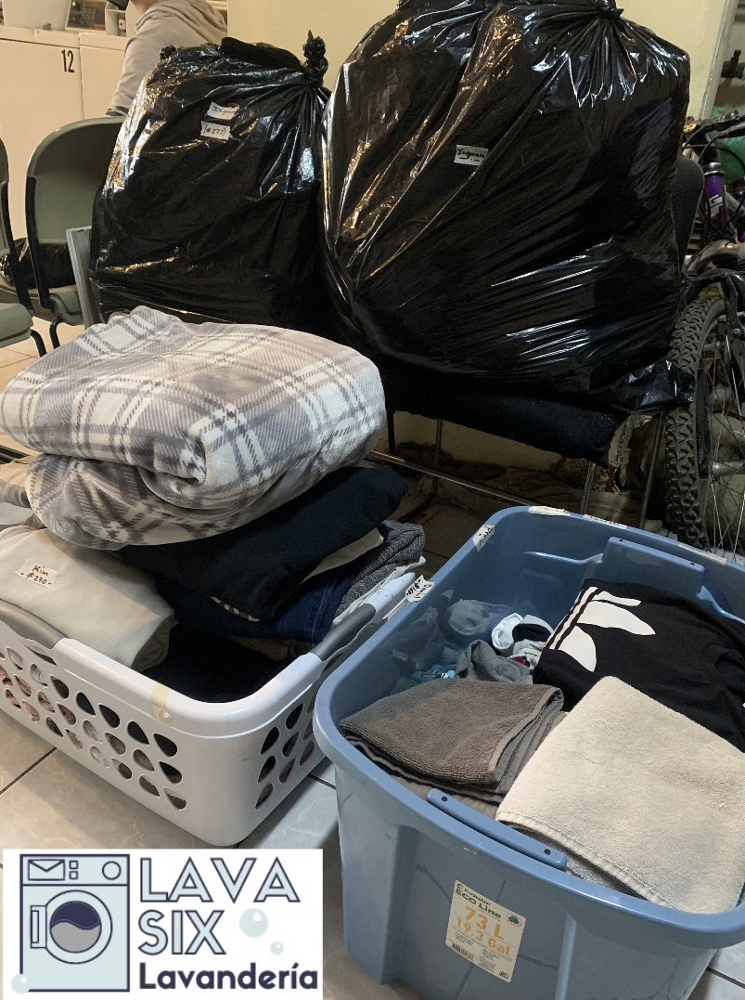

Historia
Lava Six © La lavanderia fue fundada el 5 de febrero del 2018 en Tijuana Baja California, en la colonia Baja Maq el Aguila, ubicado entre el centro industrial el Girasol e Infonavit Presidentes. Fundado por el señor Sixto Alfredo Acevedo Rivera, de procedencia Mexicana, nacido en la ciudad de Baja California
Misión
La misión es satisfacer con calidad las necesidades de limpieza y mantenimiento del guardaropa de nuestros clientes a traves de la excelencia en el servicio.
Visión
La visión es brindar al mercado servicios de lavanderia con estandares de calidad y procesos automatizados,priorizando la atencion a nuestros clientes con oportunidad, dedicación y trato personalizado para que sus requerimientos sean satisfechos, acorde con la conservación del medio ambiente.


© 2023. Derechos reservados.
Desarollado por: Ximena Acevedo Osuna Matricula: 02013793 Grupo: 605
Plantel Nueva Tijuana